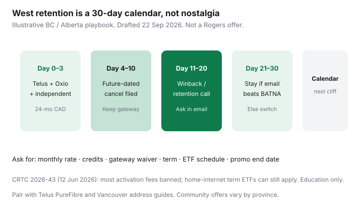

Internet · Canada
Shaw/Rogers West Retention After the Merger: What Still Works in 2026
If you still think of your bill as “Shaw,” you are not alone — and you are not stuck in 2021. Rogers completed the Shaw acquisition years ago. Legacy West accounts sit on Rogers billing, Rogers Ignite branding, and Rogers retention desks. What did not die is the promo cliff: a credit ends, the public card returns, and households in Vancouver, Calgary, Edmonton, and Victoria wonder whether “retention” still exists.
It does — as a playbook, not a brand. Pair a Telus PureFibre or independent quote with a future-dated cancellation, get five numbers in one email, then walk when the independent wins. Education only. Rogers can change desks overnight.
Disclosure: Saving Optimizer has no Rogers, Shaw, Telus, or independent ISP partnership and does not invent live commissions. Modem, mesh, and ISP mentions are offer types only. This is not legal advice or a guarantee that winback will call.
Key takeaways
- Legacy Shaw West accounts are Rogers accounts now. Retention still happens through Rogers desks; nostalgia for a Shaw loyalty team is not a strategy.
- As of ~22 Sep 2026, CRTC 2026-43 (in force 12 Jun 2026) bans most activation and plan-change fees. Home-internet fixed-term early cancellation fees can still apply if they are in the contract and decline to $0 by 24 months.
- Prep Telus PureFibre, Oxio (Rogers West plant), and any independent at the civic address before you dial. No BATNA, no leverage.
- Community patterns still favour a future-dated cancellation over a soft loyalty chat. Confirm which desk you reached and refuse a verbal-only offer.
- Watch gateway lines (~$10 community patterns) and TV/phone add-ons that inflate a “win.” Calendar the next cliff the day the email lands.
What changed for legacy Shaw accounts after the Rogers merger
Retail branding moved to Rogers Ignite / Xfinity-style packaging. The coaxial last mile in much of Alberta and B.C. is still the former Shaw plant. Your login, gateway, and channel packages may look familiar; the company that prints the Critical Information Summary is Rogers. That matters for three practical reasons:
- Retention scripts follow Rogers national patterns more than old Shaw local lore. The Rogers winback guide is the national companion; this page is the West prep layer.
- Competitors at many West addresses are Telus PureFibre (glass) and wholesalers on Rogers plant (Oxio and others), not “another Shaw.” See PureFibre versus cable in Vancouver and the Telus PureFibre winback.
- Fee rules are national CRTC rules. Do not expect a Shaw-era activation fee just because the modem sticker still says Shaw.
If your statement still shows a Shaw-sounding plan name, screenshot it. Agents remap codes. You need the speed tier, upload, monthly rate, and promo end date — not the nostalgia string.
Retention offers that still land in BC and Alberta
West threads on RedFlagDeals and local forums often report thinner winbacks than Ontario. That is a community pattern, not a law. What still shows up in 2025–2026 self-reports:
- A lower monthly on the same cable tier for 12–24 months, sometimes with a bill credit.
- A gateway fee waiver or an equal credit that cancels a ~$10 equipment line.
- A “loyalty” credit that is short (three to six months) and leaves list price afterward — treat that as a bridge, not a win.
Do not quote a Reddit dollar figure as if it were a Rogers tariff. Quote your Telus or Oxio 24-month total. Public Rogers cards rotate; verify live the week you call. Ontario community sketches (for example mid-$40s plus a $200 credit on faster tiers) are a ceiling you might hear elsewhere, not a West guarantee.

How to prep a winback call (competitors, promo end date, equipment)
- Pull last month’s bill. Circle base rate, credits, gateway, TV, and phone.
- Run address checkers for Telus PureFibre, Oxio, and any independent that qualifies. Write one 24-month CAD total each (taxes aside, same speed class).
- Note the promo or credit end date. If you do not have it, ask chat for it in writing before retention.
- Decide whether you can live with a future-dated cancel. If not, you are negotiating without the strongest desk — still ask, but expect weaker offers.
- List the five asks: monthly rate, credit amount and months, gateway waived or not, term length, ETF schedule plus the date the rate changes.
Bring upload numbers. Cable “1.5 Gbps” with tens of Mbps up is not Telus glass. The fibre versus cable guide is the filter.
When to switch to an independent on the same cable plant
Walk when Oxio or another wholesaler beats the written Rogers number on 24-month CAD and you accept chat-first support. Stay when Telus is not actually at the suite, the independent upload is worse for your work, or the Rogers email clearly wins. Pride about “beating Rogers” is not a plan. A mushy $10-off without an email is not a win either.
Use the independent switch checklist for modem returns and Internet Code cancellation timing.
Watch for gateway fees and TV bundle add-ons
Community West bills still show equipment lines that a credit can hide for a year. Ask whether the quoted monthly is all-in for the gateway. Ignite TV or home phone “for $10 more” often has its own promo clock — price internet-only with the bundle worksheet. After 12 Jun 2026, push back on forbidden activation-style fees; do not confuse those with a lawful term ETF.
30-day retention calendar
| Window | Action | Done when |
|---|---|---|
| Days 0–3 | Three quotes at the address; screenshot carts | One 24-month CAD per option |
| Days 4–10 | File future-dated cancel if you can risk it; keep gateway plugged in | Cancel confirmation number saved |
| Days 11–20 | Take the outbound call or dial winback/retention; read your BATNA | Offer requested in email / app contract |
| Days 21–30 | Compare written Rogers terms to BATNA; stay or switch | Calendar set 45 days before next cliff |
Sources & date stamps
- CRTC — Telecom Regulatory Policy / decisions on the Internet Code; CRTC 2026-43 fee measures (activation / modification fees from 12 Jun 2026). Home-internet term ETFs remain a contract question.
- CCTS — consumer summaries on banned fees versus remaining early cancellation charges (review current pages; draft context ~22 Sep 2026).
- Rogers consumer plan pages and Ignite branding — verify live; public cards rotate.
- RedFlagDeals and regional forums — self-reported West retention patterns. Not official offers.
- Companion Saving Optimizer guides: Rogers winback script; Telus PureFibre Alberta/B.C.; Vancouver PureFibre vs cable.
Frequently asked questions
Did Shaw retention disappear after the Rogers merger?
The Shaw retail brand did. Retention still exists as Rogers retention or winback on legacy West plant. Prep competing quotes the same way you would for any Rogers cliff.
Should Alberta and B.C. households expect Ontario winback numbers?
Often no. Community reports frequently describe thinner West offers. Use your Telus or independent 24-month total as leverage, not an Ontario Reddit screenshot.
Is a future-dated cancellation required?
It is a common community path to a stronger desk, not a CRTC rule. If you cannot risk a disconnect date, still call with a BATNA and demand email confirmation.
Can Rogers still charge an early cancellation fee in 2026?
Yes, if you are on a fixed-term internet contract that includes one. CRTC 2026-43 banned most activation and plan-change fees from 12 June 2026; it did not erase every home-internet term ETF. Read your schedule.
When should I just leave for Telus or an independent?
When the written Rogers offer loses on 24-month CAD, upload, or support you can live with — or when they will not put terms in writing.